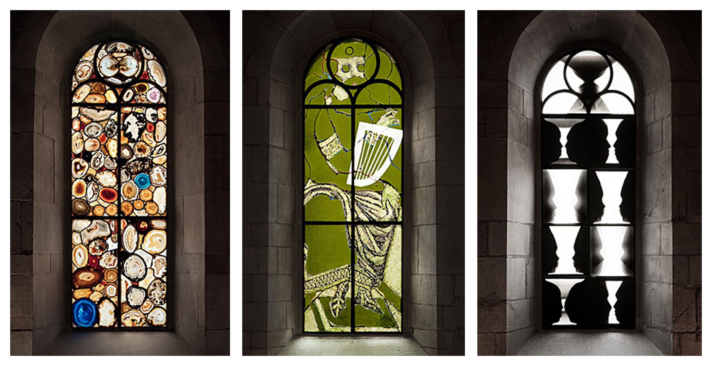

Shawn E. S. Skelton
Random Writing
I am a proudly queer failure of evangelical christian homeschooling with an anabaptist flavor, which has subtle but strong influences on my philosophy. Being homeschooled brought very early exposure to pseudoscience and its harms and it has made me deeply curious about what drives us towards particular beliefs, systems of knowledge, and rationalities. However, growing up within Christianity also gave me access to ancient, rich, and surprisingly rebellious ethical and literary traditions. When I philosophize ethically, it is still Isaiah that grounds me and Matthew which constrains me. Consequently when I do play with stories, Genesis is closest in reach.
The writings in this section are correspondingly more personal.
- Deconstructing the Deep State: QAnon, Metanarrative Conspiracy Theories, and Foucauldian Discourse
- This essay used to be an undergraduate postmodernism philosophy final project. It was written at the height of covid-19 vaccine roll-out and the associated conspiracizing. Today I would (perhaps I will someday) write a very different paper, but I still stand by the core ideas.
- What the Hell does Thomas Kuhn have to do with Conspiracy Theories?
- This is a short reflection on how philosophy of science can be used to make sense of life experiences, although in a somewhat unique context.
- A Survey of Censorship Tools
- Academic censorship is becoming a progressively more important topic, beyond that I think satire speaks best for itself
